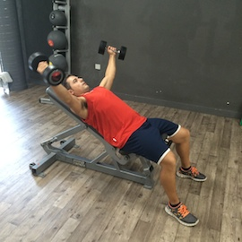

Tipos de ejercicios de hombro
Home
Category
Los 10 mejores ejercicios para tu entrenamiento de hombros
Los ejercicios básicos para tener unos hombros musculados .
Top 5 Mejores Ejercicios Para Hombros con Mancuernas + .
Ejercicios con el propio peso para hombros >> Los 5 mejores
Los mejores ejercicios de hombros según 5 expertos en . - GQ
Los mejores ejercicios para hombros que deberías practicar
Rutina de hombros | Los 4 mejores ejercicios para aumentar .
Ejercicios para entrenar los hombros en el gimnasio - Vitónica
Rutina de hombros | Los 4 mejores ejercicios para definir los .
▷ Mejores ejercicios para hombros: estimula sus 3 partes
Services
Privacy policy
Terms and Conditions
Photo gallery
Photo gallery
2021.06.22 17:01
Los 10 mejores ejercicios para tu entrenamiento de hombros
Los ejercicios básicos para tener unos hombros musculados .
Top 5 Mejores Ejercicios Para Hombros con Mancuernas + .
Si estás buscando para trabajar y fortalecer los , sin tener que . De hecho, te puedo asegurar que la mecánica de este , .
Ejercicios con el propio peso para hombros >> Los 5 mejores
Los mejores ejercicios de hombros según 5 expertos en . - GQ
Los mejores ejercicios para hombros que deberías practicar
Rutina de hombros | Los 4 mejores ejercicios para aumentar .
Ejercicios para entrenar los hombros en el gimnasio - Vitónica
Rutina de hombros | Los 4 mejores ejercicios para definir los .
▷ Mejores ejercicios para hombros: estimula sus 3 partes
Featured Projects

Menu
Last Photo